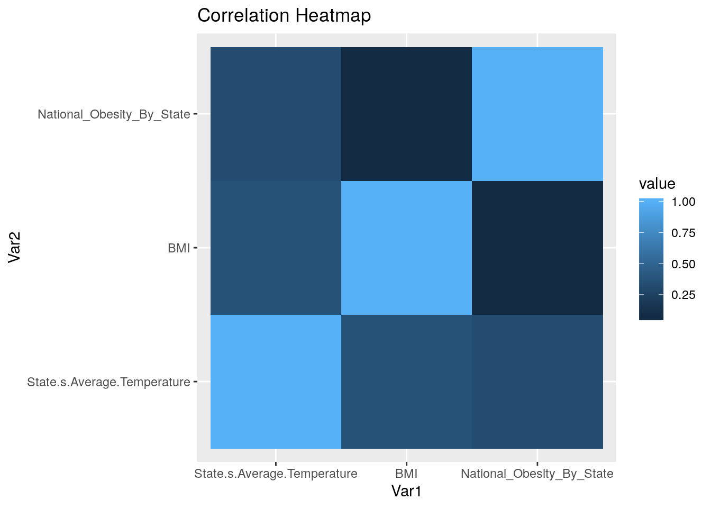
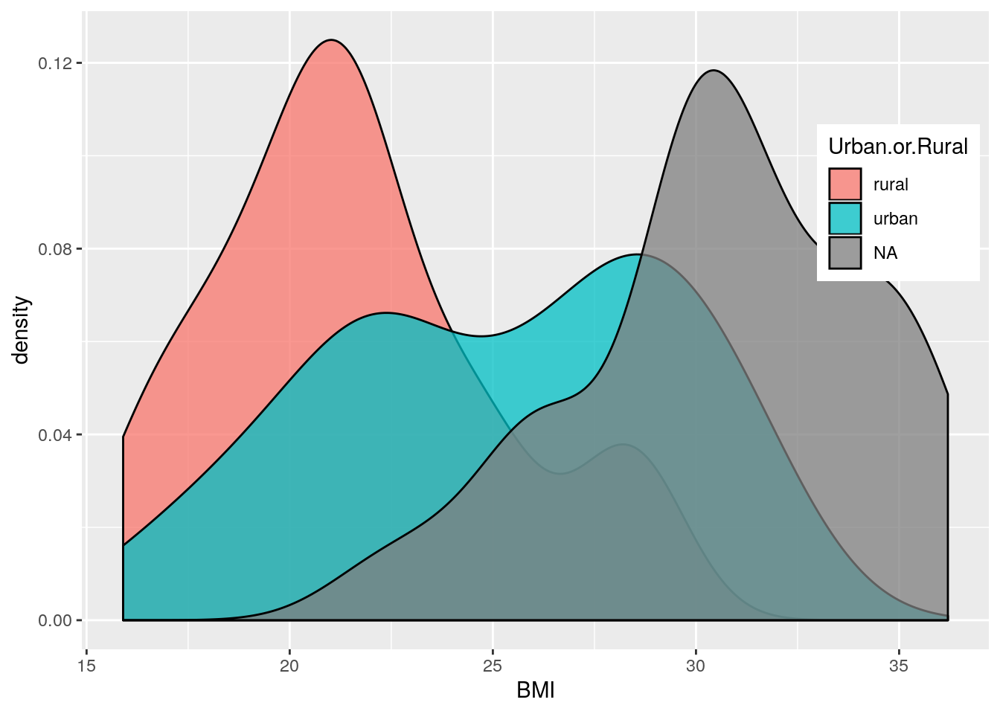
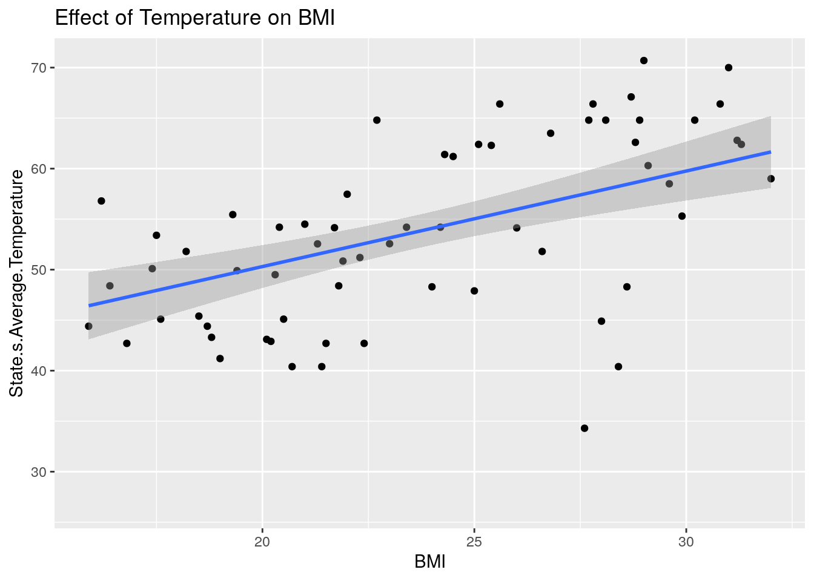
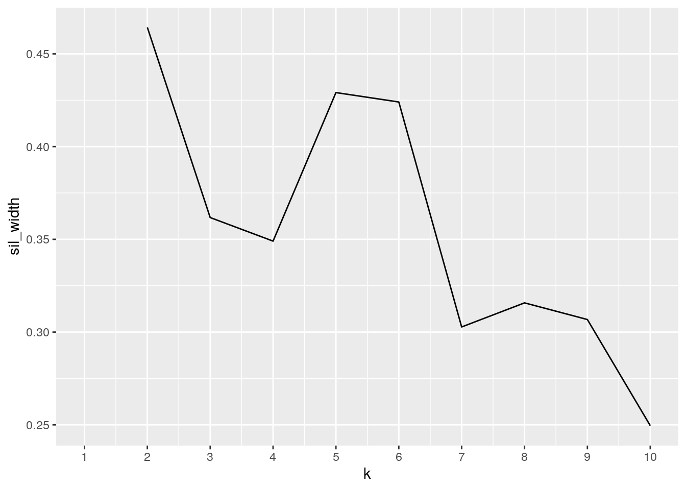
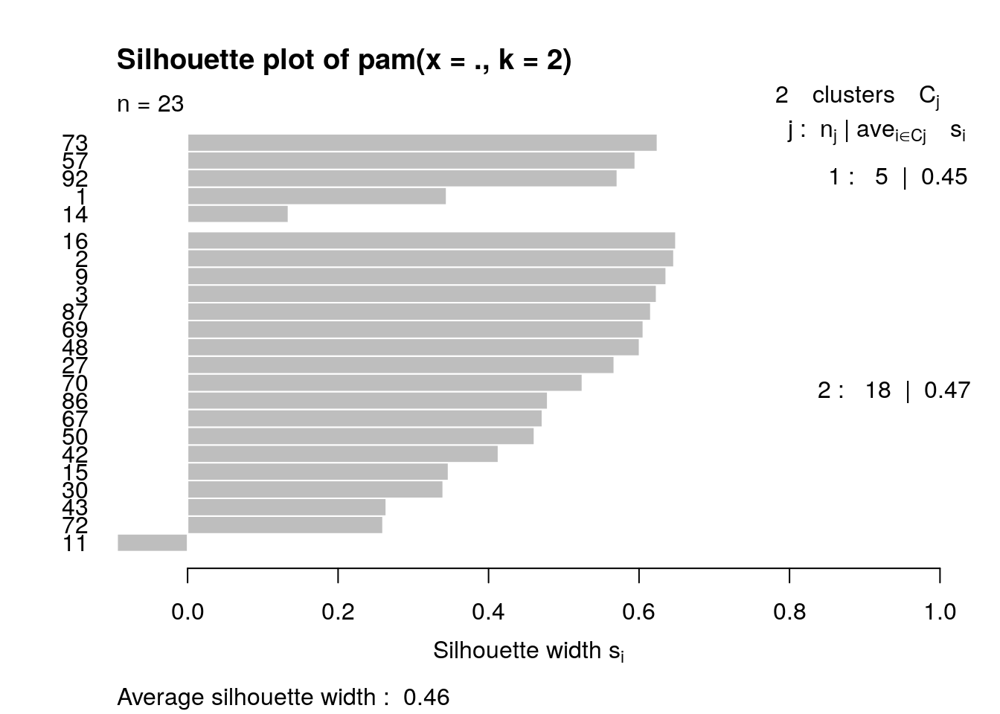
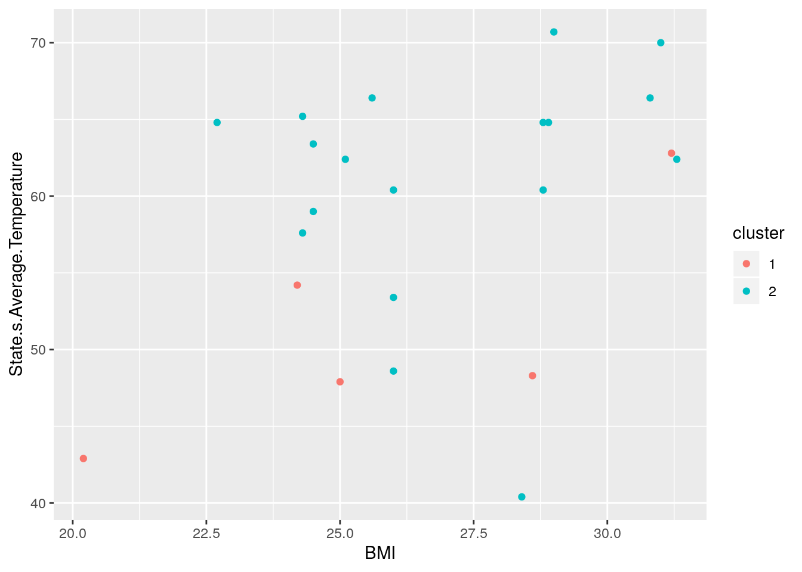
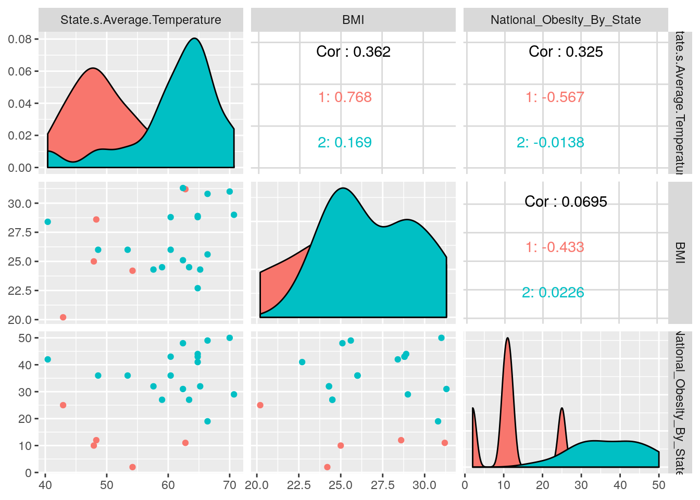

Introduction:
In this project, I have chosen to analyze the datasets provided by the CDC containing average BMI for each state (containing 52 provinces/states of the United States) which gave the correlating state’s name and ranked the states. In the complementary dataset I chose, I looked through the data.gov national data base for a supplemental dataset containing information on urban and rural areas in each state that they were able to gather and the average BMI and correlating average year-long temperature in Farenheit. I felt in these datasets with the common numeric variable BMI, it would be interesting to have the ability to assess the effect of the environment (whether it be weather dependendent or situational like rural or urban areas) on overall health determined by BMI. Furthermore, identifying these areas by their state would be quite interesting to me to gauge where in the United States it is statistically most unhealthy according to the CDC, looking at all these variables.
##Joining/Merging Datasets
r = getOption("repos")
r["CRAN"] = "http://cran.us.r-project.org"
options(repos = r)
install.packages("tidyr")## Installing package into '/stor/home/lmc3757/R/x86_64-pc-linux-gnu-library/3.4'
## (as 'lib' is unspecified)install.packages("tidyverse")## Installing package into '/stor/home/lmc3757/R/x86_64-pc-linux-gnu-library/3.4'
## (as 'lib' is unspecified)library(dplyr)##
## Attaching package: 'dplyr'## The following objects are masked from 'package:stats':
##
## filter, lag## The following objects are masked from 'package:base':
##
## intersect, setdiff, setequal, unionlibrary(tidyr)
library(tidyverse)## ── Attaching packages ──────────────────────────── tidyverse 1.3.0 ──## ✔ ggplot2 3.2.1 ✔ purrr 0.3.3
## ✔ tibble 2.1.3 ✔ stringr 1.4.0
## ✔ readr 1.3.1 ✔ forcats 0.4.0## ── Conflicts ─────────────────────────────── tidyverse_conflicts() ──
## ✖ dplyr::filter() masks stats::filter()
## ✖ dplyr::lag() masks stats::lag()library(ggplot2)
BMI3<-read.csv("BMI3.csv")
BMI3<-BMI3%>%select(State.s.Average.Temperature,Urban.or.Rural,BMI)
NOBS2<-read.csv("NOBS2.csv")
mergeddata<-full_join(BMI3,NOBS2, by=c("BMI"="Obesity"))
glimpse(mergeddata)## Observations: 127
## Variables: 5
## $ State.s.Average.Temperature <dbl> 62.8, 64.8, 64.8, 41.0, 54.2, 48.6, 60.4,…
## $ Urban.or.Rural <fct> urban, urban, rural, urban, urban, rural,…
## $ BMI <dbl> 31.2, 28.9, 22.7, 18.8, 20.4, 21.7, 21.0,…
## $ National_Obesity_By_State <int> 11, 44, 41, NA, NA, NA, NA, NA, 43, NA, 1…
## $ NAME <fct> Michigan, Maryland, Hawaii, NA, NA, NA, N…After utilizing the dplyr function full_join, there were 127 rows and 5 variables, not dropping any information or data and instead filling in NA where rows had missing values to match up data with. I utilized the function of full_join in order to take into account each state’s urban and rural BMI values as well and to have enough data to substantially reflect a more average mean when I was to compare the BMIs dependent on their environment and matching state in the other dataset. This could potentially lead to many NAs I will have to filter out in the analysis of summary statistics as some rows will have missing data that does not match up with its counterpart. Additionally, I untidied and retidied one of my datasets I merged in order to avoid confusion when looking back for reference and changed my values from “Obesity” to “BMI” so it correlates with the merged dataset.
NOBS <- NOBS2%>%pivot_wider(names_from="NAME", values_from ="Obesity")%>%pivot_longer(1:51,values_to="BMI")Wrangling: 6 core dplyr functions
mergeddata %>% mutate(BMI = as.numeric(BMI))## State.s.Average.Temperature Urban.or.Rural BMI National_Obesity_By_State
## 1 62.8 urban 31.2 11
## 2 64.8 urban 28.9 44
## 3 64.8 rural 22.7 41
## 4 41.0 urban 18.8 NA
## 5 54.2 urban 20.4 NA
## 6 48.6 rural 21.7 NA
## 7 60.4 rural 21.0 NA
## 8 60.3 urban 29.1 NA
## 9 60.4 urban 28.8 43
## 10 26.6 urban 27.6 NA
## 11 66.4 urban 30.8 19
## 12 64.8 rural 28.1 NA
## 13 50.1 rural 17.4 NA
## 14 42.9 rural 20.2 25
## 15 48.6 urban 26.0 36
## 16 64.8 urban 28.8 43
## 17 51.8 rural 18.2 NA
## 18 53.4 rural 17.5 NA
## 19 54.2 rural 23.4 NA
## 20 42.0 urban 27.6 NA
## 21 48.4 urban 21.8 NA
## 22 45.1 urban 18.8 NA
## 23 45.1 urban 17.6 NA
## 24 63.5 urban 26.8 NA
## 25 70.7 rural 28.7 NA
## 26 62.3 rural 25.4 NA
## 27 70.0 urban 31.0 50
## 28 48.4 rural 16.4 NA
## 29 59.4 rural 21.7 NA
## 30 63.4 urban 24.5 27
## 31 54.5 rural 22.3 NA
## 32 42.7 rural 21.5 NA
## 33 49.0 urban 21.7 NA
## 34 42.7 rural 16.8 NA
## 35 42.7 urban 22.4 NA
## 36 55.6 rural 20.3 NA
## 37 42.7 rural 21.9 NA
## 38 55.3 urban 29.9 NA
## 39 51.7 rural 21.3 NA
## 40 43.8 rural 18.8 NA
## 41 63.5 urban 28.7 NA
## 42 70.7 urban 29.0 29
## 43 59.0 urban 24.5 27
## 44 59.4 urban 22.0 NA
## 45 45.1 rural 20.5 NA
## 46 45.0 urban 20.3 NA
## 47 49.9 rural 19.4 NA
## 48 60.4 urban 26.0 36
## 49 64.8 urban 27.7 NA
## 50 57.6 rural 24.3 32
## 51 45.4 rural 18.5 NA
## 52 64.8 urban 16.2 NA
## 53 53.4 rural 21.3 NA
## 54 45.4 urban 28.0 NA
## 55 40.4 rural 20.7 NA
## 56 54.2 rural 23.0 NA
## 57 48.3 rural 28.6 12
## 58 59.0 urban 21.9 NA
## 59 43.1 rural 20.1 NA
## 60 51.8 urban 26.6 NA
## 61 47.9 rural 20.3 NA
## 62 48.3 urban 24.0 NA
## 63 66.4 urban 27.8 NA
## 64 44.4 rural 28.0 NA
## 65 64.8 urban 30.2 NA
## 66 41.2 urban 19.0 NA
## 67 62.4 urban 31.3 31
## 68 50.1 urban 23.0 NA
## 69 66.4 urban 25.6 49
## 70 65.2 rural 24.3 32
## 71 60.4 urban 32.0 NA
## 72 40.4 rural 28.4 42
## 73 47.9 rural 25.0 10
## 74 54.2 urban 29.6 NA
## 75 47.9 urban 22.3 NA
## 76 62.8 urban 29.6 NA
## 77 60.3 urban 22.0 NA
## 78 59.6 rural 21.7 NA
## 79 50.7 urban 19.3 NA
## 80 44.4 rural 18.7 NA
## 81 52.7 urban 22.0 NA
## 82 48.6 urban 21.0 NA
## 83 44.4 rural 15.9 NA
## 84 60.4 urban 16.2 NA
## 85 45.2 rural 16.2 NA
## 86 53.4 urban 26.0 36
## 87 62.4 rural 25.1 48
## 88 57.6 urban 32.0 NA
## 89 60.2 rural 19.3 NA
## 90 53.4 urban 23.0 NA
## 91 40.4 rural 21.4 NA
## 92 54.2 urban 24.2 2
## 93 NA NA NA
## 94 NA NA NA
## 95 NA <NA> 32.4 1
## 96 NA <NA> 34.6 3
## 97 NA <NA> 30.7 4
## 98 NA <NA> 30.7 5
## 99 NA <NA> 30.1 6
## 100 NA <NA> 29.2 7
## 101 NA <NA> 33.8 8
## 102 NA <NA> 36.2 9
## 103 NA <NA> 29.8 13
## 104 NA <NA> 23.6 14
## 105 NA <NA> 26.1 15
## 106 NA <NA> 31.4 16
## 107 NA <NA> 26.4 17
## 108 NA <NA> 29.8 18
## 109 NA <NA> 32.4 20
## 110 NA <NA> 32.1 21
## 111 NA <NA> 30.4 22
## 112 NA <NA> 34.5 23
## 113 NA <NA> 35.6 24
## 114 NA <NA> 30.1 26
## 115 NA <NA> 33.9 28
## 116 NA <NA> 35.6 30
## 117 NA <NA> 26.7 33
## 118 NA <NA> 25.3 34
## 119 NA <NA> 22.1 35
## 120 NA <NA> 35.6 37
## 121 NA <NA> 29.5 38
## 122 NA <NA> 31.7 39
## 123 NA <NA> 30.0 40
## 124 NA <NA> 29.7 45
## 125 NA <NA> 30.0 46
## 126 NA <NA> 34.2 47
## 127 NA <NA> 26.3 51
## NAME
## 1 Michigan
## 2 Maryland
## 3 Hawaii
## 4 <NA>
## 5 <NA>
## 6 <NA>
## 7 <NA>
## 8 <NA>
## 9 New Mexico
## 10 <NA>
## 11 Illinois
## 12 <NA>
## 13 <NA>
## 14 Colorado
## 15 Rhode Island
## 16 New Mexico
## 17 <NA>
## 18 <NA>
## 19 <NA>
## 20 <NA>
## 21 <NA>
## 22 <NA>
## 23 <NA>
## 24 <NA>
## 25 <NA>
## 26 <NA>
## 27 North Dakota
## 28 <NA>
## 29 <NA>
## 30 Utah
## 31 <NA>
## 32 <NA>
## 33 <NA>
## 34 <NA>
## 35 <NA>
## 36 <NA>
## 37 <NA>
## 38 <NA>
## 39 <NA>
## 40 <NA>
## 41 <NA>
## 42 Wyoming
## 43 Utah
## 44 <NA>
## 45 <NA>
## 46 <NA>
## 47 <NA>
## 48 Rhode Island
## 49 <NA>
## 50 Massachusetts
## 51 <NA>
## 52 <NA>
## 53 <NA>
## 54 <NA>
## 55 <NA>
## 56 <NA>
## 57 Idaho
## 58 <NA>
## 59 <NA>
## 60 <NA>
## 61 <NA>
## 62 <NA>
## 63 <NA>
## 64 <NA>
## 65 <NA>
## 66 <NA>
## 67 Indiana
## 68 <NA>
## 69 New Jersey
## 70 Massachusetts
## 71 <NA>
## 72 Arizona
## 73 New York
## 74 <NA>
## 75 <NA>
## 76 <NA>
## 77 <NA>
## 78 <NA>
## 79 <NA>
## 80 <NA>
## 81 <NA>
## 82 <NA>
## 83 <NA>
## 84 <NA>
## 85 <NA>
## 86 Rhode Island
## 87 Vermont
## 88 <NA>
## 89 <NA>
## 90 <NA>
## 91 <NA>
## 92 California
## 93 <NA>
## 94 <NA>
## 95 Texas
## 96 Kentucky
## 97 Georgia
## 98 Wisconsin
## 99 Oregon
## 100 Virginia
## 101 Tennessee
## 102 Louisiana
## 103 Alaska
## 104 Montana
## 105 Minnesota
## 106 Nebraska
## 107 Washington
## 108 Ohio
## 109 Missouri
## 110 Iowa
## 111 South Dakota
## 112 Arkansas
## 113 Mississippi
## 114 North Carolina
## 115 Oklahoma
## 116 West Virginia
## 117 Nevada
## 118 Connecticut
## 119 District of Columbia
## 120 Alabama
## 121 Rpuerto Rico
## 122 South Carolina
## 123 Maine
## 124 Delaware
## 125 Pennsylvania
## 126 Kansas
## 127 New Hampshiremergeddata%>%filter(between(BMI,15.9,25)) %>% na.omit(NAME)## State.s.Average.Temperature Urban.or.Rural BMI National_Obesity_By_State
## 1 64.8 rural 22.7 41
## 7 42.9 rural 20.2 25
## 16 63.4 urban 24.5 27
## 26 59.0 urban 24.5 27
## 31 57.6 rural 24.3 32
## 43 65.2 rural 24.3 32
## 44 47.9 rural 25.0 10
## 58 54.2 urban 24.2 2
## NAME
## 1 Hawaii
## 7 Colorado
## 16 Utah
## 26 Utah
## 31 Massachusetts
## 43 Massachusetts
## 44 New York
## 58 CaliforniaIn order to find how many states’ mean BMI was considered underweight/healthy by the CDC standard, I found that 6 out of the 52 provinces (including Puerto Rico and DC in the assessment) considered in the dataset of the US were considered underweight or healthy. I did this by utilizing the filter function in order to assess any states that BMI value fell under the value 25, which CDC said is the maximum healthy BMI. In my data, I distinguished the categorical variables as: urban or rural and name of state. On the other hand, the numerical variables were as follows: BMI; National Obesity by State; State’s Average Temperature.
mergeddata%>%select(contains("State")) %>%na.omit()## State.s.Average.Temperature National_Obesity_By_State
## 1 62.8 11
## 2 64.8 44
## 3 64.8 41
## 9 60.4 43
## 11 66.4 19
## 14 42.9 25
## 15 48.6 36
## 16 64.8 43
## 27 70.0 50
## 30 63.4 27
## 42 70.7 29
## 43 59.0 27
## 48 60.4 36
## 50 57.6 32
## 57 48.3 12
## 67 62.4 31
## 69 66.4 49
## 70 65.2 32
## 72 40.4 42
## 73 47.9 10
## 86 53.4 36
## 87 62.4 48
## 92 54.2 2mergeddata%>%select(contains("n"))%>%na.omit()## Urban.or.Rural National_Obesity_By_State NAME
## 1 urban 11 Michigan
## 2 urban 44 Maryland
## 3 rural 41 Hawaii
## 9 urban 43 New Mexico
## 11 urban 19 Illinois
## 14 rural 25 Colorado
## 15 urban 36 Rhode Island
## 16 urban 43 New Mexico
## 27 urban 50 North Dakota
## 30 urban 27 Utah
## 42 urban 29 Wyoming
## 43 urban 27 Utah
## 48 urban 36 Rhode Island
## 50 rural 32 Massachusetts
## 57 rural 12 Idaho
## 67 urban 31 Indiana
## 69 urban 49 New Jersey
## 70 rural 32 Massachusetts
## 72 rural 42 Arizona
## 73 rural 10 New York
## 86 urban 36 Rhode Island
## 87 rural 48 Vermont
## 92 urban 2 Californiamergeddata%>%mutate(average = State.s.Average.Temperature/BMI)## State.s.Average.Temperature Urban.or.Rural BMI National_Obesity_By_State
## 1 62.8 urban 31.2 11
## 2 64.8 urban 28.9 44
## 3 64.8 rural 22.7 41
## 4 41.0 urban 18.8 NA
## 5 54.2 urban 20.4 NA
## 6 48.6 rural 21.7 NA
## 7 60.4 rural 21.0 NA
## 8 60.3 urban 29.1 NA
## 9 60.4 urban 28.8 43
## 10 26.6 urban 27.6 NA
## 11 66.4 urban 30.8 19
## 12 64.8 rural 28.1 NA
## 13 50.1 rural 17.4 NA
## 14 42.9 rural 20.2 25
## 15 48.6 urban 26.0 36
## 16 64.8 urban 28.8 43
## 17 51.8 rural 18.2 NA
## 18 53.4 rural 17.5 NA
## 19 54.2 rural 23.4 NA
## 20 42.0 urban 27.6 NA
## 21 48.4 urban 21.8 NA
## 22 45.1 urban 18.8 NA
## 23 45.1 urban 17.6 NA
## 24 63.5 urban 26.8 NA
## 25 70.7 rural 28.7 NA
## 26 62.3 rural 25.4 NA
## 27 70.0 urban 31.0 50
## 28 48.4 rural 16.4 NA
## 29 59.4 rural 21.7 NA
## 30 63.4 urban 24.5 27
## 31 54.5 rural 22.3 NA
## 32 42.7 rural 21.5 NA
## 33 49.0 urban 21.7 NA
## 34 42.7 rural 16.8 NA
## 35 42.7 urban 22.4 NA
## 36 55.6 rural 20.3 NA
## 37 42.7 rural 21.9 NA
## 38 55.3 urban 29.9 NA
## 39 51.7 rural 21.3 NA
## 40 43.8 rural 18.8 NA
## 41 63.5 urban 28.7 NA
## 42 70.7 urban 29.0 29
## 43 59.0 urban 24.5 27
## 44 59.4 urban 22.0 NA
## 45 45.1 rural 20.5 NA
## 46 45.0 urban 20.3 NA
## 47 49.9 rural 19.4 NA
## 48 60.4 urban 26.0 36
## 49 64.8 urban 27.7 NA
## 50 57.6 rural 24.3 32
## 51 45.4 rural 18.5 NA
## 52 64.8 urban 16.2 NA
## 53 53.4 rural 21.3 NA
## 54 45.4 urban 28.0 NA
## 55 40.4 rural 20.7 NA
## 56 54.2 rural 23.0 NA
## 57 48.3 rural 28.6 12
## 58 59.0 urban 21.9 NA
## 59 43.1 rural 20.1 NA
## 60 51.8 urban 26.6 NA
## 61 47.9 rural 20.3 NA
## 62 48.3 urban 24.0 NA
## 63 66.4 urban 27.8 NA
## 64 44.4 rural 28.0 NA
## 65 64.8 urban 30.2 NA
## 66 41.2 urban 19.0 NA
## 67 62.4 urban 31.3 31
## 68 50.1 urban 23.0 NA
## 69 66.4 urban 25.6 49
## 70 65.2 rural 24.3 32
## 71 60.4 urban 32.0 NA
## 72 40.4 rural 28.4 42
## 73 47.9 rural 25.0 10
## 74 54.2 urban 29.6 NA
## 75 47.9 urban 22.3 NA
## 76 62.8 urban 29.6 NA
## 77 60.3 urban 22.0 NA
## 78 59.6 rural 21.7 NA
## 79 50.7 urban 19.3 NA
## 80 44.4 rural 18.7 NA
## 81 52.7 urban 22.0 NA
## 82 48.6 urban 21.0 NA
## 83 44.4 rural 15.9 NA
## 84 60.4 urban 16.2 NA
## 85 45.2 rural 16.2 NA
## 86 53.4 urban 26.0 36
## 87 62.4 rural 25.1 48
## 88 57.6 urban 32.0 NA
## 89 60.2 rural 19.3 NA
## 90 53.4 urban 23.0 NA
## 91 40.4 rural 21.4 NA
## 92 54.2 urban 24.2 2
## 93 NA NA NA
## 94 NA NA NA
## 95 NA <NA> 32.4 1
## 96 NA <NA> 34.6 3
## 97 NA <NA> 30.7 4
## 98 NA <NA> 30.7 5
## 99 NA <NA> 30.1 6
## 100 NA <NA> 29.2 7
## 101 NA <NA> 33.8 8
## 102 NA <NA> 36.2 9
## 103 NA <NA> 29.8 13
## 104 NA <NA> 23.6 14
## 105 NA <NA> 26.1 15
## 106 NA <NA> 31.4 16
## 107 NA <NA> 26.4 17
## 108 NA <NA> 29.8 18
## 109 NA <NA> 32.4 20
## 110 NA <NA> 32.1 21
## 111 NA <NA> 30.4 22
## 112 NA <NA> 34.5 23
## 113 NA <NA> 35.6 24
## 114 NA <NA> 30.1 26
## 115 NA <NA> 33.9 28
## 116 NA <NA> 35.6 30
## 117 NA <NA> 26.7 33
## 118 NA <NA> 25.3 34
## 119 NA <NA> 22.1 35
## 120 NA <NA> 35.6 37
## 121 NA <NA> 29.5 38
## 122 NA <NA> 31.7 39
## 123 NA <NA> 30.0 40
## 124 NA <NA> 29.7 45
## 125 NA <NA> 30.0 46
## 126 NA <NA> 34.2 47
## 127 NA <NA> 26.3 51
## NAME average
## 1 Michigan 2.0128205
## 2 Maryland 2.2422145
## 3 Hawaii 2.8546256
## 4 <NA> 2.1808511
## 5 <NA> 2.6568627
## 6 <NA> 2.2396313
## 7 <NA> 2.8761905
## 8 <NA> 2.0721649
## 9 New Mexico 2.0972222
## 10 <NA> 0.9637681
## 11 Illinois 2.1558442
## 12 <NA> 2.3060498
## 13 <NA> 2.8793103
## 14 Colorado 2.1237624
## 15 Rhode Island 1.8692308
## 16 New Mexico 2.2500000
## 17 <NA> 2.8461538
## 18 <NA> 3.0514286
## 19 <NA> 2.3162393
## 20 <NA> 1.5217391
## 21 <NA> 2.2201835
## 22 <NA> 2.3989362
## 23 <NA> 2.5625000
## 24 <NA> 2.3694030
## 25 <NA> 2.4634146
## 26 <NA> 2.4527559
## 27 North Dakota 2.2580645
## 28 <NA> 2.9512195
## 29 <NA> 2.7373272
## 30 Utah 2.5877551
## 31 <NA> 2.4439462
## 32 <NA> 1.9860465
## 33 <NA> 2.2580645
## 34 <NA> 2.5416667
## 35 <NA> 1.9062500
## 36 <NA> 2.7389163
## 37 <NA> 1.9497717
## 38 <NA> 1.8494983
## 39 <NA> 2.4272300
## 40 <NA> 2.3297872
## 41 <NA> 2.2125436
## 42 Wyoming 2.4379310
## 43 Utah 2.4081633
## 44 <NA> 2.7000000
## 45 <NA> 2.2000000
## 46 <NA> 2.2167488
## 47 <NA> 2.5721649
## 48 Rhode Island 2.3230769
## 49 <NA> 2.3393502
## 50 Massachusetts 2.3703704
## 51 <NA> 2.4540541
## 52 <NA> 4.0000000
## 53 <NA> 2.5070423
## 54 <NA> 1.6214286
## 55 <NA> 1.9516908
## 56 <NA> 2.3565217
## 57 Idaho 1.6888112
## 58 <NA> 2.6940639
## 59 <NA> 2.1442786
## 60 <NA> 1.9473684
## 61 <NA> 2.3596059
## 62 <NA> 2.0125000
## 63 <NA> 2.3884892
## 64 <NA> 1.5857143
## 65 <NA> 2.1456954
## 66 <NA> 2.1684211
## 67 Indiana 1.9936102
## 68 <NA> 2.1782609
## 69 New Jersey 2.5937500
## 70 Massachusetts 2.6831276
## 71 <NA> 1.8875000
## 72 Arizona 1.4225352
## 73 New York 1.9160000
## 74 <NA> 1.8310811
## 75 <NA> 2.1479821
## 76 <NA> 2.1216216
## 77 <NA> 2.7409091
## 78 <NA> 2.7465438
## 79 <NA> 2.6269430
## 80 <NA> 2.3743316
## 81 <NA> 2.3954545
## 82 <NA> 2.3142857
## 83 <NA> 2.7924528
## 84 <NA> 3.7283951
## 85 <NA> 2.7901235
## 86 Rhode Island 2.0538462
## 87 Vermont 2.4860558
## 88 <NA> 1.8000000
## 89 <NA> 3.1191710
## 90 <NA> 2.3217391
## 91 <NA> 1.8878505
## 92 California 2.2396694
## 93 <NA> NA
## 94 <NA> NA
## 95 Texas NA
## 96 Kentucky NA
## 97 Georgia NA
## 98 Wisconsin NA
## 99 Oregon NA
## 100 Virginia NA
## 101 Tennessee NA
## 102 Louisiana NA
## 103 Alaska NA
## 104 Montana NA
## 105 Minnesota NA
## 106 Nebraska NA
## 107 Washington NA
## 108 Ohio NA
## 109 Missouri NA
## 110 Iowa NA
## 111 South Dakota NA
## 112 Arkansas NA
## 113 Mississippi NA
## 114 North Carolina NA
## 115 Oklahoma NA
## 116 West Virginia NA
## 117 Nevada NA
## 118 Connecticut NA
## 119 District of Columbia NA
## 120 Alabama NA
## 121 Rpuerto Rico NA
## 122 South Carolina NA
## 123 Maine NA
## 124 Delaware NA
## 125 Pennsylvania NA
## 126 Kansas NA
## 127 New Hampshire NAHere I played around with my variables using the dplyr function select in order to ascertain only the variables in which “n” or “State” was mentioned in the title. Additionally, I mutated a new variable called ‘average’ which made the BMI a function of State’s Average Temperature and provided a new column for each average division.
Summary Statistics for BMI:
mean(mergeddata$BMI, na.rm = T)## [1] 25.44sd(mergeddata$BMI, na.rm = T)## [1] 5.209204var(mergeddata$BMI, na.rm = T)## [1] 27.13581quantile(mergeddata$BMI, na.rm = T)## 0% 25% 50% 75% 100%
## 15.9 21.4 25.4 29.7 36.2min(mergeddata$BMI, na.rm = T)## [1] 15.9max(mergeddata$BMI, na.rm = T)## [1] 36.2n_distinct(mergeddata$BMI, na.rm = T)## [1] 90Summary Statistics for State’s Average Temperature:
mean(mergeddata$State.s.Average.Temperature, na.rm=T)## [1] 53.69239sd(mergeddata$State.s.Average.Temperature, na.rm=T)## [1] 8.90903var(mergeddata$State.s.Average.Temperature, na.rm=T)## [1] 79.37082quantile(mergeddata$State.s.Average.Temperature, na.rm=T)## 0% 25% 50% 75% 100%
## 26.6 45.4 53.4 60.4 70.7min(mergeddata$State.s.Average.Temperature, na.rm=T)## [1] 26.6max(mergeddata$State.s.Average.Temperature, na.rm=T)## [1] 70.7n_distinct(mergeddata$State.s.Average.Temperature, na.rm=T)## [1] 47Summary Statistics for Residence Variable of Urban or Rural
mergeddata %>% group_by(Urban.or.Rural) %>% summarize('mean_BMI'=mean(BMI, na.rm=T))%>%arrange(desc(mean_BMI)) %>% na.omit()## Warning: Factor `Urban.or.Rural` contains implicit NA, consider using
## `forcats::fct_explicit_na`## # A tibble: 2 x 2
## Urban.or.Rural mean_BMI
## <fct> <dbl>
## 1 urban 25.2
## 2 rural 21.6In merging the data sets, I decided to assess if the average BMI was higher in rural or urban areas, indicative of health in certain environmental conditions of residence; however, some rows did not have BMI values assigned to them and therefore I had to use the forcats package that R recommended in order to change the implicit NAs within the variable ‘Urban or Rural’ to a “Missing” value which was also included in the assessment. This data ulitmately shows that the higher mean BMI belonged to Urban over Rural, while missing values showed outliers in the highest range.
mergeddata_BMIsd<-mergeddata%>%group_by(Urban.or.Rural)%>%summarize(sd_BMI=sd(BMI))%>%arrange(desc(sd_BMI))## Warning: Factor `Urban.or.Rural` contains implicit NA, consider using
## `forcats::fct_explicit_na`glimpse(mergeddata_BMIsd)## Observations: 4
## Variables: 2
## $ Urban.or.Rural <fct> urban, NA, rural,
## $ sd_BMI <dbl> 4.407524, 3.578124, 3.509402, NAThis shows the correlating standard deviations for the assessment of the categorical variable’s BMIs.
PropUorR<-table(mergeddata$Urban.or.Rural)
PropUorR##
## rural urban
## 2 41 51prop.table(PropUorR)##
## rural urban
## 0.0212766 0.4361702 0.5425532In analysing the categorical variables, there is a proportion of 0.328 rural and 0.408 urban inputs in this data frame; all other values belong to missing data.
nummerge<-mergeddata%>%select(-Urban.or.Rural,-NAME)
cormat<-cor(nummerge, use = "complete.obs")
glimpse(cormat)%>%round(2)## num [1:3, 1:3] 1 0.362 0.325 0.362 1 ...
## - attr(*, "dimnames")=List of 2
## ..$ : chr [1:3] "State.s.Average.Temperature" "BMI" "National_Obesity_By_State"
## ..$ : chr [1:3] "State.s.Average.Temperature" "BMI" "National_Obesity_By_State"## State.s.Average.Temperature BMI
## State.s.Average.Temperature 1.00 0.36
## BMI 0.36 1.00
## National_Obesity_By_State 0.32 0.07
## National_Obesity_By_State
## State.s.Average.Temperature 0.32
## BMI 0.07
## National_Obesity_By_State 1.00In the first step, I created a new dataframe in order to pick only the numerical values for a correlation matrix to work (with BMI, National Obestity by State, and State’s Average Temperature). In summary statistics, some interesting things to note stood out with the mean BMI being at a value of 25.44, which shows the average BMI of the US is a little overweight. However, this goes with a standard deviation of 5.21 and the minumum BMI being 15.9 while the maximum stood out at a whopping 36.2, belonging to Louisiana. The maximum temperature was 70.7 while the minumum was 26.6. This correlated with associating higher and lower BMI. As we dive further into the analysis, I believe these two variables will show a correlation. Unfortunately, the assigned ranking system of the states did not have as much relationship with the other variables. This could be seen in the correlation matrix made, rounded to 2 decimal places, that indicates the highest correlation between BMI and state’s average temperature; essentially, further proving my hypothesis about their relationship. The lowest correlation was between BMI and national obesity by state/the ranking of state.
3 Plots of Data Visualization
# Correlation Heat Map
library(reshape2)##
## Attaching package: 'reshape2'## The following object is masked from 'package:tidyr':
##
## smithsmelted_cormat <- melt(cormat)
head(melted_cormat)## Var1 Var2 value
## 1 State.s.Average.Temperature State.s.Average.Temperature 1.0000000
## 2 BMI State.s.Average.Temperature 0.3617708
## 3 National_Obesity_By_State State.s.Average.Temperature 0.3247671
## 4 State.s.Average.Temperature BMI 0.3617708
## 5 BMI BMI 1.0000000
## 6 National_Obesity_By_State BMI 0.0695437ggplot(data = melted_cormat, aes(x=Var1, y=Var2, fill=value), title(main = "Correlation Heatmap")) + geom_tile() +ggtitle(label = "Correlation Heatmap")
In this correlation heatmap, it was difficult to assess essential relationships as there were only three numeric variables to analyze. However, the strongest value in the correlation was evidently between State’s Average Temperature and BMI as it had a value of 0.3618. On the other hand, national obesity by state and BMI had the weakest and most artificial relationship at 0.0695.
#ggplot: Density Plot
mergeddata%>% ggplot(aes(x=BMI, fill=Urban.or.Rural)) + theme(legend.position=c(.9,.7)) +
geom_density(alpha=.75)## Warning: Removed 2 rows containing non-finite values (stat_density).
In this data I wanted to represent the relationship between BMI and living in a rural or urban environment utilizing a density plot as the population was quite big and it consisted of averages. It visually exemplifies how urban environments tended to have more of a range, but peaked and had their maximum values well above a value of 35. Showing that it might possibly be less healthy to be living in the city than in a rural environment. The reason I included the Missing values, or “NA”s was because research always has that gray area and will not always have distinct urban or rural acclaimed residences.
#3gglpot: Linear Regression
mergeddata %>% ggplot(aes(BMI, State.s.Average.Temperature))+ geom_point(stat = "summary") + ggtitle(label = "Effect of Temperature on BMI") + geom_smooth(method=lm)## Warning: Removed 35 rows containing non-finite values (stat_summary).## No summary function supplied, defaulting to `mean_se()## Warning: Removed 35 rows containing non-finite values (stat_smooth).
In this ggplot, I utilized the scatter plot function of geom_point in order to visually analyze the potential relationship between State’s Average Temperature and BMI; although there are outliers, they are minimal and the regression line set showed a slight positive correlation. This relationship suggests that the higher the state’s average annual temperature, the higher the value of its state’s average BMI.
k-means/PAM clustering: Dimensionality Reduction
install.packages("cluster")## Installing package into '/stor/home/lmc3757/R/x86_64-pc-linux-gnu-library/3.4'
## (as 'lib' is unspecified)library(cluster)
pam_dat<-mergeddata%>% select(-NAME, -Urban.or.Rural) %>% na.omit()
sil_width<-vector()
for(i in 2:10){
pam_fit <- pam(pam_dat, k = i)
sil_width[i] <- pam_fit$silinfo$avg.width}
ggplot()+geom_line(aes(x=1:10,y=sil_width))+scale_x_continuous(name="k",breaks=1:10)## Warning: Removed 1 rows containing missing values (geom_path). PAM clustering was used to create a clustering data set by first scaling all my numeric variables by selecting out the categorical data. In order to find how many clusters to use, we must find average silhouette width. Therefore, a line plot was created out of the average silhouette widths and it yielded 2 clusters as the highest average.
pam1<-pam_dat%>%pam(2)
plot(pam1, which=2) The average silhouette width was found to be 0.46 after k was set to 2, indicating that the clusters were set to variables with a weak and possibly artificial structure.
install.packages("plotly")## Installing package into '/stor/home/lmc3757/R/x86_64-pc-linux-gnu-library/3.4'
## (as 'lib' is unspecified)library(plotly)##
## Attaching package: 'plotly'## The following object is masked from 'package:ggplot2':
##
## last_plot## The following object is masked from 'package:stats':
##
## filter## The following object is masked from 'package:graphics':
##
## layoutpamclust<- pam_dat %>% mutate(cluster=as.factor(pam1$clustering))
pamclust## State.s.Average.Temperature BMI National_Obesity_By_State cluster
## 1 62.8 31.2 11 1
## 2 64.8 28.9 44 2
## 3 64.8 22.7 41 2
## 4 60.4 28.8 43 2
## 5 66.4 30.8 19 2
## 6 42.9 20.2 25 1
## 7 48.6 26.0 36 2
## 8 64.8 28.8 43 2
## 9 70.0 31.0 50 2
## 10 63.4 24.5 27 2
## 11 70.7 29.0 29 2
## 12 59.0 24.5 27 2
## 13 60.4 26.0 36 2
## 14 57.6 24.3 32 2
## 15 48.3 28.6 12 1
## 16 62.4 31.3 31 2
## 17 66.4 25.6 49 2
## 18 65.2 24.3 32 2
## 19 40.4 28.4 42 2
## 20 47.9 25.0 10 1
## 21 53.4 26.0 36 2
## 22 62.4 25.1 48 2
## 23 54.2 24.2 2 1After ruling out any correlating NA’s, the data was slimmed down in the ggplot to assess the cluster groupings as 2 different clusters with some outliers that overlapped.
confmat<-pamclust%>%group_by(BMI)%>%count(cluster)%>%arrange(desc(n))%>%
pivot_wider(names_from="cluster",values_from="n",values_fill = list('n'=0))
confmat## # A tibble: 18 x 3
## # Groups: BMI [18]
## BMI `2` `1`
## <dbl> <int> <int>
## 1 26 3 0
## 2 24.3 2 0
## 3 24.5 2 0
## 4 28.8 2 0
## 5 20.2 0 1
## 6 22.7 1 0
## 7 24.2 0 1
## 8 25 0 1
## 9 25.1 1 0
## 10 25.6 1 0
## 11 28.4 1 0
## 12 28.6 0 1
## 13 28.9 1 0
## 14 29 1 0
## 15 30.8 1 0
## 16 31 1 0
## 17 31.2 0 1
## 18 31.3 1 0Here, I checked the accuracy of creating 2 clusters, and they seem to be in majority within a 2 cluster range grouped by BMI due to 2 mediods.
round(sum(diag(as.matrix(confmat[,2:3])))/sum(confmat[,2:3]),3)## [1] 0.13Unfortunately, due to the clustering inaccuracies of the three total numeric variables, we produced a hit rate of 13%.
library(ggplot2)
pamclust %>% ggplot(aes(BMI, State.s.Average.Temperature, National_Obesity_By_State, color=cluster)) + geom_point() This cluster graph maps out a hard to decipher relationship of clusters but the 2 clusters apparent will be used to assess the results of the data analysis. Before reading in my data, it was a thicker plot of data points and helped distinguish clusters; however, I believe the filtering out of any correlationg NAs or missing data during merging significantly reduced the data to more applicable or realistic measures in order to analyze a relationship.
library(GGally)##
## Attaching package: 'GGally'## The following object is masked from 'package:dplyr':
##
## nasapam1$clustering## 1 2 3 9 11 14 15 16 27 30 42 43 48 50 57 67 69 70 72 73 86 87 92
## 1 2 2 2 2 1 2 2 2 2 2 2 2 2 1 2 2 2 2 1 2 2 1pamclust %>% mutate(cluster=as.factor(pam1$clustering)) %>% ggpairs(columns = 1:3, aes(color=cluster)) In this various assorted plot diagram, I used ggpairs to find that the strongest correlation amongst the variables was between BMI and State’s Average temperature, with a value of 0.362 and the cluster plot showed the relationships separation between the factors of urban and rural to be the clearest; furthermore, the density plot correlating the urban or rural average BMIs showed visually the fact that the higher average for BMIs was consistently within urban areas over rural. The weakest correlation was between National Obesity by State and BMI, with a correlation value of 0.0695, virtually no structure.
In this 3D plot, all numeric variables averages were compared and National Obesity by State was input and BMI determined each axes’ shape. While it appears they each have their own clusters, National Obesity of each State and State’s Average Temperature were scattered within the same axis, not independent or showing a correlation with one another. However, BMI and State’s Average Temperature consistently showed a weak structure for a relationship, but yet had potential for a strong relationship if I had more data that did not compute to NA or missing for the BMI column when merged. In future research, I would opt out of including the national obesity by state variable and opt in more data to strengthen the possible relationship existing between BMI and State’s Average Temperature.
pamclust%>%plot_ly(x= ~BMI, y = ~State.s.Average.Temperature, z = ~National_Obesity_By_State, color= ~cluster,type = "scatter3d", mode = "markers", symbol = ~BMI, symbols = c('circle','x','square'))## Warning: The shape palette can deal with a maximum of 6 discrete values because
## more than 6 becomes difficult to discriminate; you have 18. Consider
## specifying shapes manually if you must have them.## Warning: The following are not valid symbol codes:
## 'NA'
## Valid symbols include:
## '0', 'circle', '100', 'circle-open', '200', 'circle-dot', '300', 'circle-open-dot', '1', 'square', '101', 'square-open', '201', 'square-dot', '301', 'square-open-dot', '2', 'diamond', '102', 'diamond-open', '202', 'diamond-dot', '302', 'diamond-open-dot', '3', 'cross', '103', 'cross-open', '203', 'cross-dot', '303', 'cross-open-dot', '4', 'x', '104', 'x-open', '204', 'x-dot', '304', 'x-open-dot', '5', 'triangle-up', '105', 'triangle-up-open', '205', 'triangle-up-dot', '305', 'triangle-up-open-dot', '6', 'triangle-down', '106', 'triangle-down-open', '206', 'triangle-down-dot', '306', 'triangle-down-open-dot', '7', 'triangle-left', '107', 'triangle-left-open', '207', 'triangle-left-dot', '307', 'triangle-left-open-dot', '8', 'triangle-right', '108', 'triangle-right-open', '208', 'triangle-right-dot', '308', 'triangle-right-open-dot', '9', 'triangle-ne', '109', 'triangle-ne-open', '209', 'triangle-ne-dot', '309', 'triangle-ne-open-dot', '10', 'triangle-se', '110', 'triangle-se-open', '210', 'triangle-se-dot', '310', 'triangle-se-open-dot', '11', 'triangle-sw', '111', 'triangle-sw-open', '211', 'triangle-sw-dot', '311', 'triangle-sw-open-dot', '12', 'triangle-nw', '112', 'triangle-nw-open', '212', 'triangle-nw-dot', '312', 'triangle-nw-open-dot', '13', 'pentagon', '113', 'pentagon-open', '213', 'pentagon-dot', '313', 'pentagon-open-dot', '14', 'hexagon', '114', 'hexagon-open', '214', 'hexagon-dot', '314', 'hexagon-open-dot', '15', 'hexagon2', '115', 'hexagon2-open', '215', 'hexagon2-dot', '315', 'hexagon2-open-dot', '16', 'octagon', '116', 'octagon-open', '216', 'octagon-dot', '316', 'octagon-open-dot', '17', 'star', '117', 'star-open', '217', 'star-dot', '317', 'star-open-dot', '18', 'hexagram', '118', 'hexagram-open', '218', 'hexagram-dot', '318', 'hexagram-open-dot', '19', 'star-triangle-up', '119', 'star-triangle-up-open', '219', 'star-triangle-up-dot', '319', 'star-triangle-up-open-dot', '20', 'star-triangle-down', '120', 'star-triangle-down-open', '220', 'star-triangle-down-dot', '320', 'star-triangle-down-open-dot', '21', 'star-square', '121', 'star-square-open', '221', 'star-square-dot', '321', 'star-square-open-dot', '22', 'star-diamond', '122', 'star-diamond-open', '222', 'star-diamond-dot', '322', 'star-diamond-open-dot', '23', 'diamond-tall', '123', 'diamond-tall-open', '223', 'diamond-tall-dot', '323', 'diamond-tall-open-dot', '24', 'diamond-wide', '124', 'diamond-wide-open', '224', 'diamond-wide-dot', '324', 'diamond-wide-open-dot', '25', 'hourglass', '125', 'hourglass-open', '26', 'bowtie', '126', 'bowtie-open', '27', 'circle-cross', '127', 'circle-cross-open', '28', 'circle-x', '128', 'circle-x-open', '29', 'square-cross', '129', 'square-cross-open', '30', 'square-x', '130', 'square-x-open', '31', 'diamond-cross', '131', 'diamond-cross-open', '32', 'diamond-x', '132', 'diamond-x-open', '33', 'cross-thin', '133', 'cross-thin-open', '34', 'x-thin', '134', 'x-thin-open', '35', 'asterisk', '135', 'asterisk-open', '36', 'hash', '136', 'hash-open', '236', 'hash-dot', '336', 'hash-open-dot', '37', 'y-up', '137', 'y-up-open', '38', 'y-down', '138', 'y-down-open', '39', 'y-left', '139', 'y-left-open', '40', 'y-right', '140', 'y-right-open', '41', 'line-ew', '141', 'line-ew-open', '42', 'line-ns', '142', 'line-ns-open', '43', 'line-ne', '143', 'line-ne-open', '44', 'line-nw', '144', 'line-nw-open
## Warning: The following are not valid symbol codes:
## 'NA'
## Valid symbols include:
## '0', 'circle', '100', 'circle-open', '200', 'circle-dot', '300', 'circle-open-dot', '1', 'square', '101', 'square-open', '201', 'square-dot', '301', 'square-open-dot', '2', 'diamond', '102', 'diamond-open', '202', 'diamond-dot', '302', 'diamond-open-dot', '3', 'cross', '103', 'cross-open', '203', 'cross-dot', '303', 'cross-open-dot', '4', 'x', '104', 'x-open', '204', 'x-dot', '304', 'x-open-dot', '5', 'triangle-up', '105', 'triangle-up-open', '205', 'triangle-up-dot', '305', 'triangle-up-open-dot', '6', 'triangle-down', '106', 'triangle-down-open', '206', 'triangle-down-dot', '306', 'triangle-down-open-dot', '7', 'triangle-left', '107', 'triangle-left-open', '207', 'triangle-left-dot', '307', 'triangle-left-open-dot', '8', 'triangle-right', '108', 'triangle-right-open', '208', 'triangle-right-dot', '308', 'triangle-right-open-dot', '9', 'triangle-ne', '109', 'triangle-ne-open', '209', 'triangle-ne-dot', '309', 'triangle-ne-open-dot', '10', 'triangle-se', '110', 'triangle-se-open', '210', 'triangle-se-dot', '310', 'triangle-se-open-dot', '11', 'triangle-sw', '111', 'triangle-sw-open', '211', 'triangle-sw-dot', '311', 'triangle-sw-open-dot', '12', 'triangle-nw', '112', 'triangle-nw-open', '212', 'triangle-nw-dot', '312', 'triangle-nw-open-dot', '13', 'pentagon', '113', 'pentagon-open', '213', 'pentagon-dot', '313', 'pentagon-open-dot', '14', 'hexagon', '114', 'hexagon-open', '214', 'hexagon-dot', '314', 'hexagon-open-dot', '15', 'hexagon2', '115', 'hexagon2-open', '215', 'hexagon2-dot', '315', 'hexagon2-open-dot', '16', 'octagon', '116', 'octagon-open', '216', 'octagon-dot', '316', 'octagon-open-dot', '17', 'star', '117', 'star-open', '217', 'star-dot', '317', 'star-open-dot', '18', 'hexagram', '118', 'hexagram-open', '218', 'hexagram-dot', '318', 'hexagram-open-dot', '19', 'star-triangle-up', '119', 'star-triangle-up-open', '219', 'star-triangle-up-dot', '319', 'star-triangle-up-open-dot', '20', 'star-triangle-down', '120', 'star-triangle-down-open', '220', 'star-triangle-down-dot', '320', 'star-triangle-down-open-dot', '21', 'star-square', '121', 'star-square-open', '221', 'star-square-dot', '321', 'star-square-open-dot', '22', 'star-diamond', '122', 'star-diamond-open', '222', 'star-diamond-dot', '322', 'star-diamond-open-dot', '23', 'diamond-tall', '123', 'diamond-tall-open', '223', 'diamond-tall-dot', '323', 'diamond-tall-open-dot', '24', 'diamond-wide', '124', 'diamond-wide-open', '224', 'diamond-wide-dot', '324', 'diamond-wide-open-dot', '25', 'hourglass', '125', 'hourglass-open', '26', 'bowtie', '126', 'bowtie-open', '27', 'circle-cross', '127', 'circle-cross-open', '28', 'circle-x', '128', 'circle-x-open', '29', 'square-cross', '129', 'square-cross-open', '30', 'square-x', '130', 'square-x-open', '31', 'diamond-cross', '131', 'diamond-cross-open', '32', 'diamond-x', '132', 'diamond-x-open', '33', 'cross-thin', '133', 'cross-thin-open', '34', 'x-thin', '134', 'x-thin-open', '35', 'asterisk', '135', 'asterisk-open', '36', 'hash', '136', 'hash-open', '236', 'hash-dot', '336', 'hash-open-dot', '37', 'y-up', '137', 'y-up-open', '38', 'y-down', '138', 'y-down-open', '39', 'y-left', '139', 'y-left-open', '40', 'y-right', '140', 'y-right-open', '41', 'line-ew', '141', 'line-ew-open', '42', 'line-ns', '142', 'line-ns-open', '43', 'line-ne', '143', 'line-ne-open', '44', 'line-nw', '144', 'line-nw-open## Warning in RColorBrewer::brewer.pal(N, "Set2"): minimal value for n is 3, returning requested palette with 3 different levels
## Warning in RColorBrewer::brewer.pal(N, "Set2"): minimal value for n is 3, returning requested palette with 3 different levels